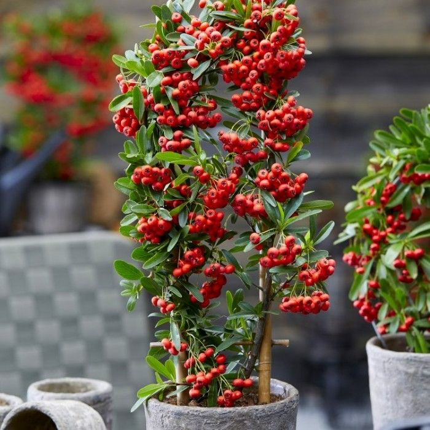
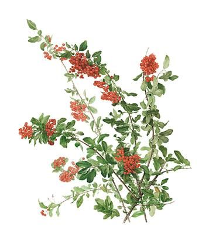

Pyracantha coccinea (Scarlet Firethorn)

General Information
Scientific Name: Pyracantha coccinea
Family: Rosaceae
Type: Evergreen thorny shrub
Height: 6 to 12 feet tall
Uses of Pyracantha:
- Ornamental: Grown for its bright orange-red berries and dense green foliage.
- Hedging: Popular choice for living fences due to its thorny nature.
- Wildlife: Provides shelter and food for birds and small mammals.
Medicinal & Traditional Uses:
- Traditionally used in herbal medicine for mild anti-inflammatory properties.
- Fruits sometimes used in preserves (though slightly astringent).
- In Chinese medicine, some Pyracantha species are used for digestive aid.
- Warning: Raw berries may cause mild stomach upset if consumed in large quantities.

Description
Pyracantha coccinea is an evergreen shrub known for its clusters of small white flowers in spring and bright, ornamental red to orange berries in autumn and winter. It features glossy leaves and sharp thorns, making it ideal for protective hedging.
Habitat & Growth
- Native Regions: Southern Europe and Western Asia
- Soil: Tolerates a range of soils but prefers well-drained types
- Sun: Grows best in full sun to partial shade
- Watering: Moderate watering; drought-tolerant once established
Propagation
Pyracantha is typically propagated through semi-hardwood cuttings taken in late summer. It can also grow from seeds, though cuttings ensure desired traits. Growth is fairly fast and responds well to pruning.
Fun Facts & Cultural Significance
- Its name "Pyracantha" comes from Greek words for fire (pyr) and thorn (akantha).
- Often planted under windows as a natural deterrent due to its dense, spiny structure.
- The bright berries persist into winter, adding seasonal color to gardens.
- Birds love the berries and often use the shrubs for nesting.